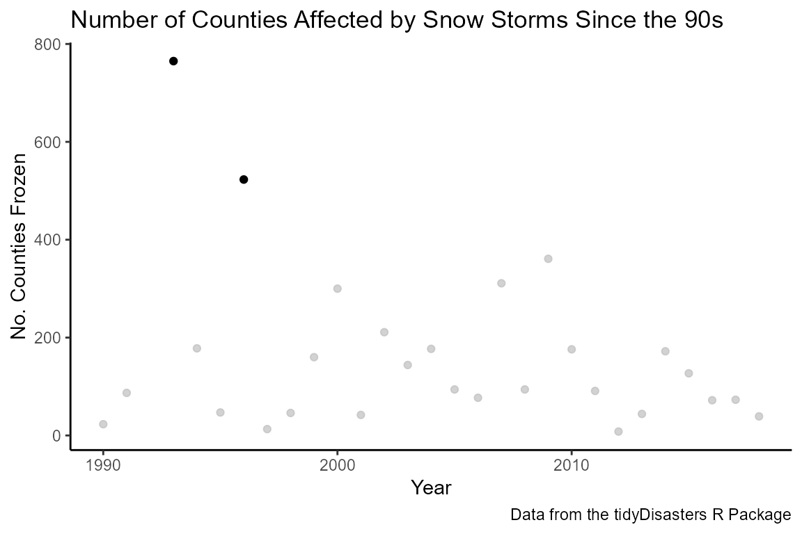
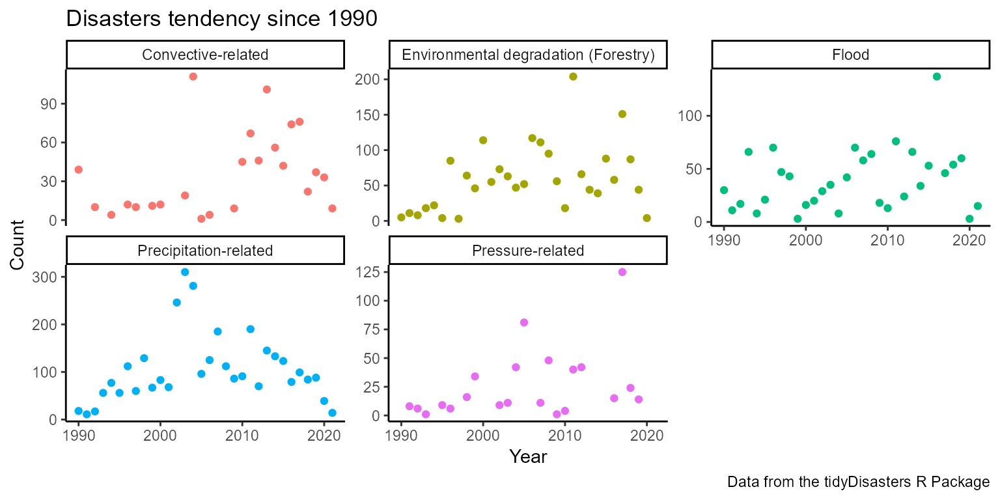

`tidyDisasters` R Package: A harmonized disaster data set of natural and man-made disasters in the United States from 1990 to 2020
Catalina Canizares, Mark Macgowan, Gabriel Odom
Source:vignettes/tidyDisasters.rmd
tidyDisasters.rmdIntroduction
The Sendai Framework for Disaster Risk Reduction 2015–2030 aims to reduce disaster risk and losses in lives and physical, social, cultural, and environmental assets over the next 15 years (UNDRR 2015). For this aim to be effective, disaster risk reduction has to rely on timely and reliable information and scientific data (Migliorini et al. 2019). However, these data are typically dispersed, unstructured and stored in different databases owned by various government agencies, research centers, private organizations, and a wide variety of stakeholders (Li et al. 2019; Faiella et al. 2022; Ortmann et al. 2011; Nunavath and Prinz 2017).
The highly dispersed data makes it difficult for researchers to discover and use all relevant data for modeling and predicting future disasters and underlying risk factors for vulnerable territories (Li et al. 2019). This data gap is not new; this discussion has been present in literature since 1945 (Faiella et al. 2022), the Disaster Risk Management Knowledge Centre of the E.U. Commission has published several reports that highlight the limitations, inconsistencies, and gaps of current datasets (Faiella et al. 2022), and the academic community has constantly advocated for the importance of the interconnection of datasets, given that they come from different scientific disciplines (hydrology, meteorology, climate) (Li et al. 2019).
Efforts have been made to address this gap. For example, the Linked Open Data for Global Disaster Risk Research (LOGD), approved by the Working Group of the Committee on Data for Science and Technology (CODATA) (Taipei, 2012), is a task force dedicated to reducing the barriers that researchers face due to the limited interconnection of disaster-related data (CODATA, n.d.). The first outcome from this group is a whitepaper identifying the data gap and giving specific recommendations to the scientific community and governmental organizations to advance the state of disaster data for a more effective way of mitigating and reducing the impact of disasters (Li et al. 2019). Another initiative is The Loss Data Enhancement for Disaster Risk Reduction and Climate Change Adaptation project (LODE), which has contributed to the data science in disaster risk by analyzing the current weaknesses in post-disaster damage and loss data management and has developed an information system for improved data collection, storage and retrieval to serve multiple applications for mitigation and preparedness (Faiella et al. 2022).
In order to support these initiatives and to keep advocating for the need for open data and data interconnectivity that is accessible and usable by researchers, decision-makers, and the public, to fully understand the cause and impact of disaster events without getting lost in the “sea” of distributed and disparate data (Li et al. 2019), there is a need for efforts to merge multiple information resources into a single queryable database.
To date, large amounts of disaster-related data exist for the U.S. territory, such as the Emergency Events Database (EM-DAT) maintained by the Centre for Research on the Epidemiology of Disasters (Belgium); the Global Terrorism Database (GTD) by the National Consortium for the Study of Terrorism and Responses to Terrorism (United States of America); and Federal Emergency Management Agency (FEMA) National Emergency Management Information System (United States of America), that administers the FEMA Disaster Declarations Summary.
Taking into account the lack of interconnection between large data sets and the need for quality information for effective monitoring of the Sendai Framework and the development of evidence-based interventions, this package intended to merge the EM-DAT, GTD, and FEMA data sets to produce a set of relational databases in a fifth normal form (Kent 1983) that unites information from three sources that complement each other. For example, whereas FEMA reports the county-level location of a natural event, EMDAT estimates the number of killed and wounded by that natural event, and the GTD contains the terrorism events.
Method
The merge was conducted for disasters since January 1990 to 2020 in
the 50 U.S. states (plus the District of Columbia and Puerto Rico) and
for which three or more human casualties were reported (Law-112–265 2013). The merge process was based
on data equivalence criteria, meaning that the reported natural
disasters and terrorism events were matched at the state and county
level and by the reported date or range of dates. Data cleaning for each
data set was needed to reach the homogenization process using the
tidyverse package (Wickham et al.
2019) for R Studio.
Spelling corrections for states and counties had to be performed (see
table disastLocation_df); date formats had to be
homogenized between the data sets to match the year, month, day, and
format (see table distastDates_df); imputation for end
dates was conducted for fire incidents where no end date was reported by
calculating the average of days fires lasted since 1991 according to
FEMA; separation of variables into columns was performed, especially for
the EM-DAT, given that in one single cell the names of country, states
or county where reported. Finally, a mapping of U.S. states to counties
and imputations was performed. Once the data sets were cleaned, creating
a primary key that could unite the data sets was followed (see table
allKeys_df). This key contains the beginning year, month,
state, and a ticker to differentiate events with the same year, month
and state.
Additionally, the harmonization considered the lack of consistency
between the three data sets in determining the reported event type. The
United Nations Office has identified this gap for Disaster Risk
Reduction, and to reduce this gap, a technical report of hazard
definition and classification has been published (UNDDR and Dadvar 2020). The report compiles a
list of 302 hazards grouped according to eight clusters: meteorological
and hydrological hazards, extraterrestrial hazards, geohazards,
environmental hazards, chemical hazards, biological hazards,
technological hazards, and societal hazards (UNDDR and Dadvar 2020). The report states that
this hazard list is considered the most useful at present (UNDDR and Dadvar 2020). Taking this into
account, this package has adopted this classification by converting the
original type of event reported by EM-DAT (see table
emdat_hazard_cluster_df), GTD, and FEMA (see table
fema_hazard_cluster_df) and has adapted its name to the
Hazard Cluster following annex 6 of the report, where the equivalences
for each possible disaster is presented. The equivalence adapted was
given in discussions between the package’s authors and corresponded to
the author educated opinion (see table disastTypes_df). The
original hazard classification table given by the U.N. report is also
part of the package (see table hazard_report_df) to be used
in case of any disagreement with the subjective classification given by
the authors.
Finally, the package contains eight tables that share the same key to be efficiently joined. The tables were constructed in a fifth normal form (Kent 1983) to save computer memory and are presented in table 1.
Table 1, Date sets inside the tidyDisasters package
| Name of data set | Description |
|---|---|
allKeys_df |
This data contains the original keys from the FEMA, GTD and EMDAT data set and the universal key created by the authors. |
disastCasualties_df |
This data contains the number of people killed and wounded per
event. It is relevant to note that the number of people killed and wounded correspond to the total casualties for the whole event, it does not relate to the particular number of casualties in each county or state |
disastDates_df |
This data contains the beginning and end date of the
disasters registered in EMDAT and FEMA. The dates are given at the state level, this means that if different counties where affected in different dates this will not be accounted for in this data set. |
disastLocations_df |
This data contains the states and counties where disasters have happened across the USA. |
disastTypes_df |
This data contains contains the type of disasters reported by FEMA and EMDAT based on the classification of the Hazard Definition and Classification Review Technical Report published by the UN Office for Disaster Risk Reduction (2020) |
emdat_hazard_cluster_df |
This data contains contains the type of disasters reported by EMDAT and the matched hazard cluster based on the classification of the Hazard Definition and Classification Review Technical Report published by the UN Office for Disaster Risk Reduction (2020) Annex 6 page 72. The matching was done by Dr. Mark Macgowan and Catalina Canizares following the suggestions in the report. However, this classification is subjective and should be used taking into account this disclaimer. |
fema_hazard_cluster_df |
This data contains the type of disasters reported by FEMA and the
matched hazard cluster based on the classification of the Hazard Definition and Classification Review Technical Report published by the UN Office for Disaster Risk Reduction (2020) Annex 6 page 72. The marching was done by Dr. Mark Macgowan and Catalina Canizares following the suggestions in the report. However, this classification is subjective and should be used taking into account this disclaimer. |
hazard_report_df |
This data contains the table from Annex 6 page 72 of the
Hazard Definition and Classification Review Technical Report published by the UN Office for Disaster Risk Reduction (2020) |
Examples
With the data that is contained in the package it is possible to query and plot information easily. Examples are given bellow.
Example 1: Considers time trends and U.S geography affected
The first example explores the maximum number of counties affected by
a single severe ice and snow storm. By joining the cleaned data sets of
locations (disastLocations_df), types of events
(disastTypes_df) and dates (disastDates_df) we
were able to plot and find the 1993 “Storm of the Century” that affected
almost 800 counties (NOAA 2020) and the
1996 blizzard that affected around 500 counties and is remembered as the
greatest snowstorm in terms of the amount of snow that fell (Stachelski, n.d.).
data("disastLocations_df")
data("disastTypes_df")
data("disastDates_df")
disastLocations_df %>%
left_join(disastTypes_df) %>%
left_join(disastDates_df) %>%
mutate(Year = year(eventStart)) %>%
filter(incident_type %in% c("Severe Ice Storm", "Snow")) %>%
group_by(state, county, Year) %>%
summarise(Frozen = n() >= 1L, .groups = "keep") %>%
group_by(Year) %>%
summarise(Count = sum(Frozen)) %>%
ggplot() +
aes(x = Year, y = Count) +
labs(
title = "Number of Counties Affected by Snow Storms Since the 90s",
caption = "Data from the tidyDisasters R Package",
y = "No. Counties Frozen"
) +
theme_classic() +
geom_point() +
gghighlight(Count > 400)
Example 2: Considers time trends and Hazard Clusters
Another example of the usage of this package is this plot that evidences the trend on six different types of hazard clusters.
disastTypes_df %>%
left_join(disastDates_df) %>%
mutate(Year = year(eventStart)) %>%
filter(
hazard_cluster %in% c(
"Precipitation-related", " Wind-related",
"Environmental degradation (Forestry)", "Flood", "Convective-related",
"Pressure-related"
)
) %>%
group_by(Year, hazard_cluster) %>%
count(hazard_cluster) %>%
ggplot() +
aes(x = Year, y = n, color = hazard_cluster) +
labs(
title = "Disasters tendency since 1990",
caption = "Data from the tidyDisasters R Package",
y = "Count"
) +
geom_point() +
facet_wrap(~hazard_cluster, scales = "free_y") +
theme_classic() +
theme(legend.position = "none") 
Example 3: Considers individual query of specific event
Finally, another example from this data show that it can be used to query individual event such as the Orlando nightclub shooting in 2016.
data("disastCasualties_df")
disastTypes_df %>%
left_join(disastDates_df) %>%
left_join(disastCasualties_df) %>%
left_join(disastLocations_df) %>%
mutate(Year = year(eventStart)) %>%
filter(state == "FL" & hazard_type == "SOCIETAL" & Year == 2016) %>%
rmarkdown::paged_table()Discussion
The need for integrated and queryable data in disaster management is essential for better emergency response and prevention of loss. However, the data that is currently available tends to be disperse, in different formats, heterogeneously distributed and owned by different stakeholders and agencies (Li et al. 2019; Faiella et al. 2022; Ortmann et al. 2011; Nunavath and Prinz 2017). Consequently, interventions and prevention programs are taking longer to develop given the lack of data and decisions become difficult to take given the limited information avaialble [Nunavath and Prinz (2017). Therefore, this study aimed at uniting available heterogeneously dispersed data from three different sources together to improve information accessibility and analysis.
Moreover, the cleaned and harmonized data sets can be used to relate mass casualties to their short and long-term consequences beyond the damage itself, because other data sets can be easily joined if there is state and county level information. Therefore, mental and physical health consequences, economic loss, or other variables of interest can be analyzed taking into account this already cleaned and joined data.